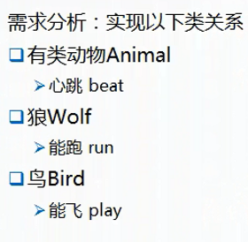

复习:
继承的特点：
1.代码重用；
2.便于维护：
高耦合
设计一个能被子类继承的类：
1.继承层次最好控制在2-3层；(继承层次最好不要 过深)
2.要有详细的文档说明；(说明继承时的注意事项, 重写时的规则)
3.要封装；
对所有用户开放 public
只对子类开放 protected
不允许子类重写 用final
-------------------------------------------------------------------------------------------------------------------------------------------------------------------------
继承的缺点：
1.破坏封装；
2.高耦合。(父类的有些功能,部分子类是没有的,但也不得不继承,这就是一种高耦合的体现)
-------------------------------------------------------------------------------------------------------------------------------------------------------------------------
组合(以及聚合)：
体现整体和局部的关系。(继承体现的是父子之间的关系)
语法上：局部类作为整体类的成员变量。
遇到整体和局部的关系时,就可以考虑用组合来实现了,不一定什么都要用继承
举例

用组合而不用继承实现:

调用方式也和继承有一点点区别:

再举例用组合的情况:


---------------------------------------------------------------------------------------------------------------------------------------------------------------------------
抽象类：
只约定了类具有的抽象功能，没有具体实现相应的功能。
使用场合：
1.该类没有必要创建对象；或者该类不适合创建对象；
2.用来继承使用且只需要使用子类的对象；
3.只需提供一个模板, 不用具体实现。
(比如说该类的一部分方法子类继承后都必然重写,且该类没有必要创建对象,那父类就没必要具体去实现这些方法了,则定义成抽象方法即可)
注意：
1.抽象类是不能创建对象的；(一个原因是: 抽象类如果创建了对象后那肯定可以调用抽象方法,而抽象方法本来就是没有实现的,这样的话明显有问题)
2.抽象类中可以定义抽象方法也可以只定义普通方法；
3.子类：
抽象类是可以有抽象子类的。定义抽象子类的方式也很简单, 只需在继承抽象父类的子类的class关键字前面加一个abstract , 抽象子类具有和抽象父类一样的性质。
普通子类必须重写实现抽象父类中的所有抽象方法，但是抽象子类除外(因为抽象子类中允许抽象方法的存在)。(因为普通子类如果不实现抽象方法,创建对象后调用父类的象方法的话肯定会出问题,因为抽象方法没有具体实现)
(注意, 子类只能"extends 抽象类", 不能"implements 抽象类" , 因为抽象类只能被继承, 只有接口才能用"implements"关键字)
4.构造器不能是抽象的；(因为构造器是创建对象,完成初始化各种值的。抽象类的普通子类创建对象时要一层层往上调用父类的构造方法, 如果父类的构造方法是抽象的,还怎么调用? 难道还要让子类连父类的构造方法也一起实现? 显然不可能,一个类不可能去帮忙实现其他类的构造方法。抽象类定义构造器还有一个重要的作用就是方便直接使用匿名内部类创建子类对象(我猜的))
5.abstract 不能与 private或final或static 一起使用。
(如果是abstract的方法:
如果abstract的方法同时被private修饰, 那么该方法对子类就不可见了,就无法重写抽象方法了; 而如果abstract的方法同时被final修饰,那么子类也不能重写了,定义成抽象方法就没有意义了; 而如果abstract的方法能用static修饰, 那说明该抽象方法是属于类的, 能通过"类名.方法名"来直接调用,但是抽象方法并没有具体实现, 直接调用抽象方法是没有意义的。
如果是abstract的类:
如果abstract类同时被private修饰, 那么该类对于其他类来说是不可见的,因为private修饰的东西只对本类可见, 即使在同一个包里,该类也不可见; 如果abstract类同时被final修饰, 说明该类是一个最终类, 不能被继承, 显然是不合适的; 而如果abstract类同时被static修饰, 被static修饰的类一定是内部类(这点我在day14里的"静态内部类"部分说明了原因), 而一个静态内部类是不能是抽象的, 否则外部类直接通过"外部类名.内部类名.成员"来直接调用内部类里的方法或属性肯定会出错,因为一个抽象类里难免会有抽象方法)
抽象类使用方法:

抽象方法的正确写法(也就是不实现):

抽象方法的错误写法: (加了一对大括号的方法就是实现了, 虽然说大括号里没有内容,但这叫空实现, 和不实现不一样,空实现也是一种实现)

-------------------------------------------------------------------------------------------------------------------------------------------------------------------------
接口：
一组功能的封装。
接口的地位和类是一样的, 但它不是一个类
接口的定义：
(注意接口本身(不是指接口内)的访问修饰符只能有两种,一个是public,一个是默认的)
访问修饰符 interface 接口{
常量; (这里的常量还必须是在定义时就进行初始化的（因为被static final修饰, 如果只是被final修饰, 则可以不在
定义时就初始化）,接口里的成员变量不管写不写修饰符,都是public static final修饰的 ,不能用其他修饰符)
举例：

抽象方法; (不管写不写public, 都是public的。接口里要定义抽象方法可以不用显式用abstract修饰)
默认方法; (不管写不写public, 都是public的。注意默认方法不是指被默认访问修饰符修饰的方法,而是该接口中
有默认实现的方法,接口里要定义默认方法必须显式用default修饰)
举例:

静态方法； (不管写不写public, 都是public的。接口里要定义静态方法必须显式用static修饰)
静态内部类型；（如静态内部类，静态内部接口，静态内部枚举, 接口里的内部类型只能是静态的, 并且不管写不写public static, 都是public static的）
}
在jdk8.0版本之前,接口里的成员只有常量和抽象方法,没有其他成员。上面的接口里的成员是指的jdk8.0支持的所有成员,在jdk9.0时另外还多加了支持私有方法(private修饰的方法),加入这个是为了代码的重用
注意：
1.接口不能创建对象；(一个原因是因为接口里面有抽象方法)
2.所有的成员都是public的; (接口内不能使用其他访问修饰符, 接口里的任何成员不管会不会显式写public修饰符, 都是public的(自然也包括静态内部类型, 虽然接口本身可以有两种访问修饰符--public和默认, 但接口里的内部接口即使没显示写public它的修饰符也是public的而不是默认修饰符)
3.所有常量必须是 public static final修饰的;
4.接口的使用方式："实现类"实现(implements)"接口"
(接口的实现很像父类的继承, 因为接口的成员(除了静态成员)都能在实现类中直接使用,就像子类使用父类的成员那样)
接口是可以有抽象实现类的, 定义抽象实现类的方式也很简单, 只需在实现接口的实现类的class关键字前面加一个abstract 。
普通的实现类要实现接口中的所有抽象方法，但抽象实现类除外(因为抽象类中允许抽象方法的存在)。
5.实现类可以同时实现多个接口的功能；(即多实现。实现了多个接口的话要重写实现所有接口的抽象方法)
举例:


6.子接口可以继承(extends)父接口，并且可以多继承。 (接口的继承相当于对接口功能的扩展,继承后,子接口毕竟还是接口,所以父接口的抽象方法当然也不用在子接口里实现)
注意: Java中的类是单继承的，但接口可以多继承，
(1) java中的类是单继承的
如果一个类继承了两个类，但是这两个类中有相同的方法，那么子类调用，无法确定应该调用哪个方法。
(2) 接口可以多继承
因为接口只有抽象方法，具体方法只能由实现接口的类实现，在调用的时候始终只会调用实现类（也就是子类覆盖的方法）的方法（不存在歧义），因此即使继承的两个接口中的方法名是一样的，最终调用的时候也都是调用实现类中的那个方法，不会产生歧义；
而又因为接口只有静态的常量，但是由于静态变量是在编译期决定调用关系的，即使存在一定的冲突也会在编译时提示出错；而引用静态变量一般直接使用类名或接口名，从而避免产生歧义，因此从接口的变量是来看也是可以通过的。
多继承时举例

此时下面只需实现一个接口即可,但是里面包含的所有抽象方法都要实现(包括Socket接口继承而来的抽象方法),也就是说直接父类(接口)和间接父类(接口)的抽象方法都要实现

举例: (京东商城实现银行的网上支付功能)

注意,下面的两种写法,在接口里,是等价的。在接口里,方法前面不加任何修饰符就相当于修饰符是public abstract的。
同理, 在接口里, 默认方法和静态方法也可以省略public不写,但都是等价于加上public的写法。
同时也不允许在接口中出现其他访问修饰符。

下面这个例子也能说明上面这个问题, 如果接口中的方法不加任何访问修饰符表示的是默认访问修饰符,那么实现类中改成protected修饰应该不成问题,因为子类的访问权限一定不能比父类低(protected访问范围显然高于默认),但是这里却报错了,并且把protected去掉,变成默认修饰符依然报错,错误提示说要把访问修饰符改成public。所以说明接口中的该方法就是public修饰的
(子类的访问权限一定不能比父类低,这个原理虽然因为接口里的所有成员都是public的这个前提条件而不适用于接口,但假设我们开始并不知道这个,那么实现类和接口的访问权限一样当然不成问题,所以两个都是默认访问修饰符修饰应该没啥问题, 但是却报错了,说明不是这么回事)。

同理, 在接口里, 默认方法和静态方法也可以省略public不写,但都是等价于加上public的写法

同理,常量在接口里也有等价写法。在接口里, 下面方框中的两种写法是等价的:

实现接口其实有些类似于继承父类, 像接口中定义的常量和默认方法,也是能被实现类直接使用的, 如下图中的红框,就像子类使用父类的成员一样。但是接口中的静态方法是不能在子接口和它的实现类里直接使用的, 而是只能通过"类名(或接口名).方法名"这种方式来调用, 这就跟普通的类的静态成员在别的类中的调用方式一样了,这说明接口中的静态方法根本没有被包含到子接口和实现类中去。虽然继承父类时静态方法也会受访问修饰符的限制,在private和默认修饰符时继承有一定限制, 但在访问修饰符允许的条件下还是可以直接在子类中使用的; 但接口的静态方法根本就不会包含在子接口和它的实现类中,所以接口的静态方法在子类和实现类中调用时只能用像调用普通类中的静态方法一样,如下面的绿框内容:

当一个类同时实现两个接口(或一个子接口同时继承两个接口)时,两个接口中有同名的常量时,可以直接通过"接口名.常量名"来
区分,因为接口的常量都是static的
而显然,对于两个接口中同名的静态方法时,不用区分,不管有没有重名, 使用时就必须用"接口名.方法名"来调用。

当一个类同时实现两个接口(或一个子接口同时继承两个接口),两个接口中有同名的默认方法时,这时候就要求实现类(或子接口中)必
须重写该同名默认方法, 重写时主要是指定调用该默认方法时,调用的是哪个父接口中的。如下图。
并且,可以发现, 其实super关键字的完整写法是"类名(或接口名).super()"或者"类名(或接口名).super.方法名"这样的,也就是
说super前面是带有它对应的类名(或接口名)的,只是在单继承时,父类的类名当然可以省略,直接写super即可, 而只有在接口
的多继承和接口的多实现的情况下,才必须区分是哪个父接口.super 。


当一个类同时实现两个接口(或一个子接口同时继承两个接口),如果是两个抽象方法同名, 那么区不区分无所谓, 因为抽象方法都是要重写的, 直接在实现类中正常重写就行。实现类中调用的该同名方法必然是自己重写过的,也就是说实现类的对象调用该同名方法时,调用的是自己的方法,而且因为接口不能创建对象,所以抽象方法同名时可以区分是哪个父接口的抽象方法,但没必要区分。
要区分的话,区分的方法如下: (用匿名内部类来区分)

-------------------------------------------------------------------------------------------------------------------------------------------------------------------------
抽象类 和 接口 的异同：
相同点：
1.都不能创建对象；
2.都能定义抽象方法；(注意只有抽象类和接口中可以有抽象方法。抽象实现类也属于抽象类)
3.用子类(或者实现类)继承(或实现)使用；
4.普通子类(或普通实现类)要实现抽象父类(或接口)中的所有抽象方法, 抽象的子类(或抽象实现类)除外
不同点：
抽象类：
提供了模板的作用。(模板已经提供了一部分的功能, 而子类还会在此基础之上再增加功能,既然是继承,肯定是要加点功能的,子类也当然要有区别于父类的独特的功能, 不然的话定义个子类继承父类还有什么意义,子类不加功能的话直接用父类不就好了)
子类和父类的关系，是继承的关系,并且是单一继承。
接口：
一组规则。(最重要的是定义了一组规则,遵守这些规则, 你就能用这个接口, 并不要求实现类需要再添加功能)
接口适用于不同的程序之间的调用, 同样也适用于同一程序,对于同一程序来说, 接口的作用是为了降低模块(类)之间的耦合连接。而继承是高耦合的, 父类的功能在所有子类中都是平等拥有的,所以每个子类在父类中继承到的东西都是一样的, 而接口就是降低这种耦合连接的, 可以提取出父类中的那些不是所有子类都需要的功能作为接口,需要这个功能的就去实现这个接口,不需要的就直接继承父类即可, 降低类之间的耦合程度。比如前面所说的例子: 鸵鸟是鸟类的子类, 但是鸵鸟不会飞, 所以可以把"飞"这个功能写到一个接口里, 会飞的子类就去继承这个接口即可。所以接口的使用更加灵活
一个类在继承的同时实现接口,写法一定是先写继承再写实现

看一个关于继承和实现有趣的例子:
某个类继承一个类的同时实现接口, 那么继承的优先级高于实现, 也就是说, 继承的父类中和实现的接口中如果有同名的成员时, 继承的成员会直接覆盖掉接口的成员而不报错,这也是为什么写代码时继承(extends)写在前面而实现(implements)写在后面的原因。

注意: 就像类有子类父类, 有直接子类和间接子类、直接父类和间接父类之分一样, 接口也有子接口父接口, 有直接子接口和间接子接口、直接父类和间接父类之分; 同时接口的实现类还有直接实现类和间接实现类!!!也即是说接口的实现类不止可以有一层, 可以有多层继承结构。间接实现类是指直接实现类实现了(implement)接口后,然后直接实现类被一直继承(extend),这就是间接实现类, 接口里的方法会被一直继承下去。
我判断有间接实现类存在的依据如下图: 就是在泛型参数的上限设置为如下形式后, Demo3只继承了Demo2而没有实现接口的情况下, 既然还能当实际类型参数使用(如绿框),说明Demo3同时也属于Ia和Ib两个接口的实现类, 这里并不是直接实现的,而是间接实现的这两个接口, 所以可以称为间接实现类。

从下图则可以看出接口里的方法也会被间接实现类继承到, 会一直继承下来。

-------------------------------------------------------------------------------------------------------------------------------------------------------------------------
类之间的关系：
UML建模语言
类图：
类域: 就是指成员变量,也就是属性
类图中的访问修饰符的表示方式：
"-" 表示private
什么都不加表示默认访问修饰符
"#" protected
"+" public
如:

下面是类间的各种关系:
泛化：继承.
子类是父类
语法：extends

实现：
类和接口
语法：implements

依赖：(A类动作行为的实现需要依赖B类来实现, 就可以说A类依赖于B类)
依赖是一种"使用"的关系。
语法上一般是：
class A类{
方法名（B类 B类对象）{}
}
比如说动物和食物就是依赖的关系,因为动物"吃"这个动作(方法)就要依赖于食物 也就是把食物作为参数传入"吃"这个方法
class 动物{
void 吃(食物）{ }
}
在类图中,是依赖者指向被依赖者(A类指向B类)

关联：
是一种"拥有"的关系。(比如说学生拥有课程)
语法上：体现为成员变量, 一般是被拥有者作为拥有者类里的一个成员变量
根据类与类之间对象的数目可有分为：
一对一的关系：比如车和车牌
一对多的关系：比如球队和球员
多对多的关系：比如老师和学生
比如学生拥有课程:(箭头由拥有者指向被拥有的一方)

聚合（聚集）：是一种强关联关系。
体现的是整体和局部的关系，并且局部离开了整体可以独立存在。(比如说人群和人, 人离开人群也能独立存在)
语法上：局部类作为整体类里的一个成员变量而存在
比如说车和车门,箭头由局部指向整体:

组合：强聚集。(组合是一种更强的聚集关系)
也是体现了整体和局部的关系，但是局部离开了整体不可以独立存在。(比如人和心脏,心脏不能作为一个个体独立存在)
语法上：局部类作为整体类里的一个成员变量而存在
比如说狼和心脏, 箭头有局部指向整体:

举一个画类图的例子:

具体类图如下:

--------------------------------------------------------------------------------------------------------------------------------------------------------------------------
多态：
即一种物质，多种形态。
程序中的多态是指同一个引用类型,使用不同的实例而执行不同操作
多态的特点：
1.一定是对方法进行了 重写；
2.写法一定是: 父类引用 --> 子类对象 (通常方式是: 父类 父类对象 = new 子类(); )
接口引用 --> 实现类对象 (通常方式是: 接口 接口对象 = new 实现类(); )
多态也正好说明了: 引用的类型和对象的类型不一定就是一样的(比如说可以定义一个父类数组,里面的引用的类型都是父类
的类型, 但是这些引用所指向的对象类型却可以是多种多样的,可以是父类本身的,也可以是该
父类的所有子类的)
多态的实现形式: 类多态、接口多态、参数多态(如 Object类的 equals(Object object)方法就是一种参数多态)
多态的结果：
子类独特的功能被屏蔽，调用不了。(所以应用多态可以屏蔽掉子类之间的差异性,只调用所有子类共有的功能)
举例: (下面这就是一个多态的使用方式, 可以看到父类引用指向了子类对象后,就不能调用子类独有的方法了,会报编译错误,
不过这也是在笔记"day10"里提到的自动类型转换与强制类型转换, 子类转换为父类对象后,编译器就默认car引用的是
一个父类对象,父类里面没有子类独有的方法,编译器当然不会允许car调用咯)
当然, 父类引用指向子类对象的过程也可以分开写,写成下面形式也是一样的:
Car1 car1 = new Car1();
TrafficTool car = car1;

参数多态 举例: 参数里直接写父类的引用也可以实现某个方法的多态
首先是类图,各个类之间的关系如下,按照类图来设计类:

看treatment()方法也可以看出为什么参数多态是一种运行时多态, 因为对象是在运行期来决定对象的类型的,而treatment()
方法的参数pet就只是个引用而已, 光看代码你不知道pet将会调用哪个类的方法, 只有等运行期才知道是什么类的对象传
给pet, 所以叫做运行时多态。

不用多态时PetHospital类是这样写的: (这样的话就是方法的重载了,这样的话如果Pet类有很多子类的话就会有很多重
载, 造成代码的冗余,所以为什么要用参数多态的好处就体现了出来)

-------------------------------------------------------------------------------------------------------------------------------------------------------------------------
类型转换：
引用类型转换和基本类型转换是不一样的, 引用类型转换只是名义上类型转换了(或者说只是对象的引用变量的类型变了),实际上堆里的对象是根本没有改变的,原来是什么类的对象,转换后还是什么类的对象
1.向上类型转换：
子类 --> 父类
2.向下类型转换：
父类 --> 子类
书写格式: （子类类型）父类对象
--------------------------------------------------------------------------------------------------------------------------------------------------------------------------
运算符 instanceof
用来判断某个对象是否是 某类 或 某接口类型。
是 返回true，不是 返回false。
注意: 如果 类B 是 类A 的子类或 类B 是 接口A 的实现类(或者其他直接或间接的继承、实现关系), 那么, 用 "B的对象 instanceof A " , 结果会返回true。
如前面的参数多态的例子中, PetHospital类改成如下形式 , 则可以在多态中调用子类独有的方法:

如果有如下语句:

则Duck类的对象即是 Animal类型 也是 Terrestrial类型 , 实例化一个duck对象后:
Duck duck = new Duck();
则下面两条语句都会输出true;
System.out.println(duck instanceof Animal);
System.out.println(duck instanceofTerrestrial);
--------------------------------------------------------------------------------------------------------------------------------------------------------------------------
再来看一个多态的例子
首先是类图如下:

根据类图设计类: (重点注意红框里的设计)


———————————————————————手写与上传资料分割线——————————————————————